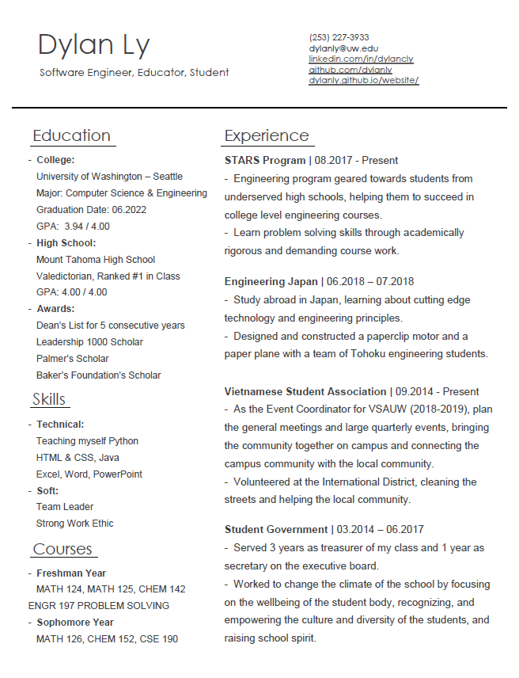

Dylan Ly
University of Washington - Seattle
Resume

Press "Download PDF" below for a downloadable link.
If you are looking for someone who is:
- Diligent and hardworking
- An analytical and logical thinker
- A determined problem solver
- Optimistic and radiates positivity
- Awesome
Email me at dylanly@uw.edu
And find me on LinkedIn at Dylan Ly
Download PDF